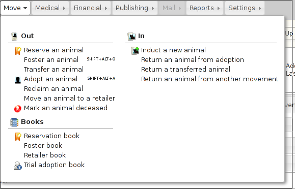
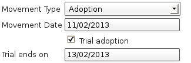
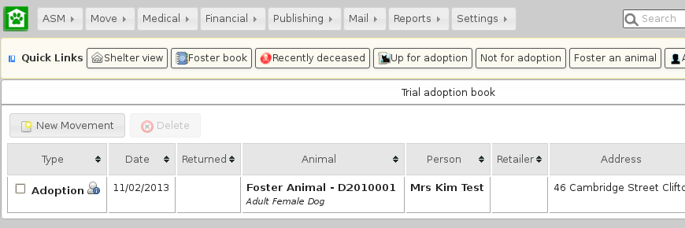

Movements¶
A large part of the administrative duties you will need to perform with Animal Shelter Manager revolve around the movement and reservation of animals.
To start with, it is best to explain how the movement system works; each movement record represents a leaving and returning transaction. You can therefore only have one (or no) active movement record at a time. ie. No more than one unreturned movement. This is because the animal cannot leave the shelter in two different ways without being returned first.
This system allows you to keep track of all the animal’s movements over its lifetime to fosters, adopters, etc.
Any method by which an animal leaves your shelter requires a movement record. The only exception is death, which is handled through the animal death tab since it can only occur once.
To make this process easier, you can use the Move menu to quickly create movements for animals. These actions will automatically validate the animal and person to make sure the movement is appropriate, and if the animal is already fostered it will be returned first, if it has open reservations/applications they will be cancelled, etc.
Reservations¶
A singular exception to this is reservations - since they are not actually a movement (the animal hasn’t gone anywhere) and they represent an adoption intention.
You can have one or more reservations as well as an open movement. You should turn the reservation into an adoption movement when the animal is adopted by the person with the reserve and cancel any other outstanding reservations. If it detects multiple reservations, ASM will prompt and automatically cancel the other reservations for you when you turn one into an adoption using the screen.
Note
ASM calls reservations what some shelters call “adoption applications”. You can have as many open applications on an animal as you like with an appropriate status, but only one will ever become the animal’s adoption.
In order to help with adoption application tracking, a reservation can be created that is not yet linked to an animal. The option needs to be turned on to support this.
Retailer Movements¶
ASM has a special kind of movement called a “retailer” movement. This movement should be used if your shelter sells animals through retailers (pet shops, etc.).
To use this, you need to create at least one person on the system with the “Retailer” flag set. When an animal goes to a retailer, you create a retailer movement, moving the animal to the retailer (you can use ).
Animals at retailers are still classed as on the shelter for reporting purposes, however you may then use the additional retailer reports to generate information about retailers (inventories, volumes moved, average time, etc)
When an owner adopts the animal and the paperwork is received by the shelter, you should return the animal from the retailer movement, create the real owner record and adopt the animal to it. If you use and the animal is at a retailer, ASM will take care of this for you.
Movement records also hold a “from retailer” field, which allows you to identify a successful adoption to an owner through a particular retailer. As long as you use the Adopt an animal process, ASM will set this for you.
If you do not want to use retailer functionality, you can turn off the retailer feature under the screen.
Trial Adoptions¶
If you have enabled the option under for “Our shelter does trial adoptions”, then when you adopt an animal, either from the movement screens or then a checkbox will appear allowing you to flag that the adoption is a trial and when the trial ends.
Some shelters commonly call this process “Foster-to-adopt”.
Animals who are on a trial adoption will appear under
When the trial ends, an alert will be shown on the home screen, which you can use as a reminder to contact the owner and either get the animal returned or make the adoption permanent. There are reports you can also install from the repository to view active or expired trial adoptions.
You make an adoption permanent by simply unticking the trial box in the movement record.
Movement Books¶
ASM has a set of movement books that can be used for conveniently viewing animals who are currently off the shelter or reserved.
They are:
Reservation book
Foster book
Retailer book
Trial adoption book
Return an animal from adoption (shows adoptions in the last 30 days)
Return a transferred animal (shows transfers in the last 30 days)
Return an animal from another movement (escaped, stolen, released, reclaimed animals in the last 30 days).
Conceptually, all the books work in exactly the same way – they show sets of animal movements off the shelter for different reasons. You can quickly link to the animal or people records or return the animal from the movement back to the shelter. To do that, simply open the movement and set a return date (or use the Return button).